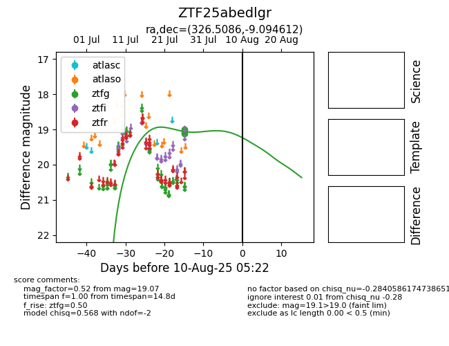

Target ZTF25abedlgr at 2025-08-10 05:22, see:
FINK: fink-portal.org/ZTF25abedlgr
Lasair: lasair-ztf.lsst.ac.uk/objects/ZTF25abedlgr
ALeRCE: alerce.online/object/ZTF25abedlgr
alt names
ZTF25abedlgr (ztf,fink)
coordinates:
equatorial (ra, dec) = (326.5086,-9.09461)
galactic (l, b) = (46.3237,-42.73890)
photometry
last ztfg=19.07
3 ztfg detections
